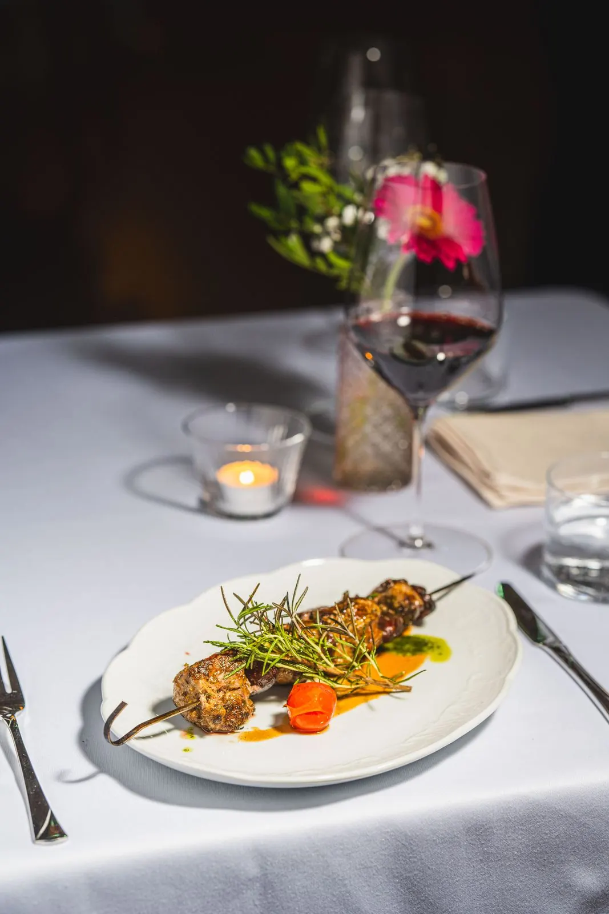
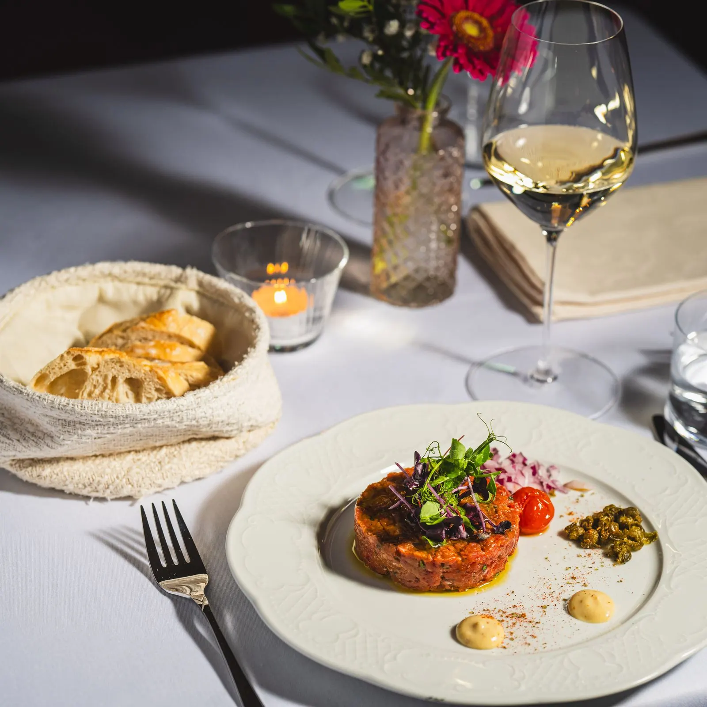
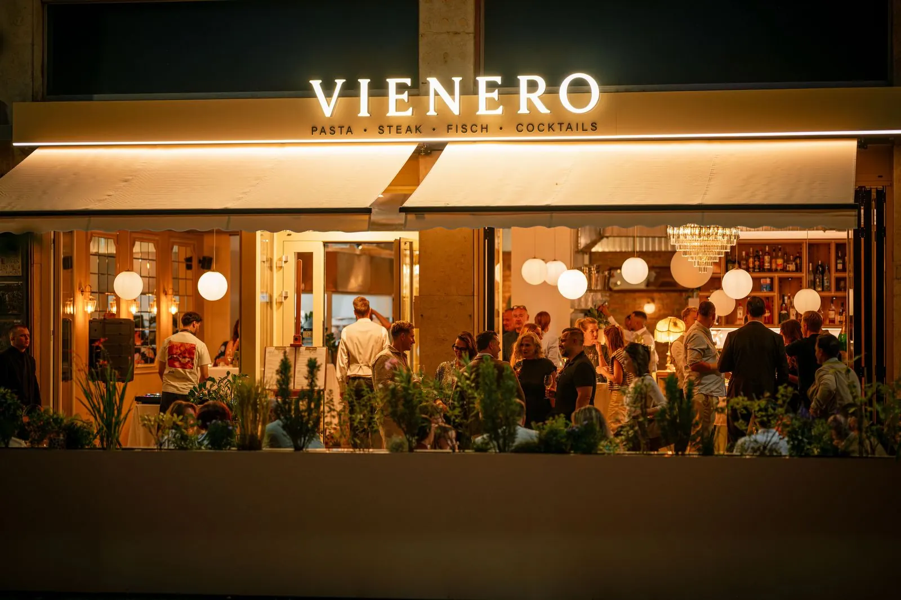

Dry Aged Steak in Wien
Unsere Steaks sind dry aged und kommen aus Österreich und Uruguay. Wir grillen sie kräftig, servieren sie innen saftig und bringen sie direkt vom Grill an den Tisch, mitten in der Wiener Innenstadt am Stadtpark.
Unsere Dry Aged Steaks
Ribeye Steak 300 g
43,90 €Kräftig marmoriert, vom Grill. Optional als Surf and Turf mit Garnelen.
Filetsteak 200 g / 250 g
39,90 / 45,90 €Besonders zart, vom Grill. Optional als Surf and Turf mit Garnelen.
Trüffel Parmesan Pommes
10,90 €Rosmarinkartoffeln
7,90 €Mediterranes Grillgemüse
9,90 €
Beilagen werden extra berechnet. Auszug aus unserem Menu. Allergene und Zutaten verrät Ihnen gerne unser Service.
Was Dry Aged ausmacht
Beim Dry Aging reift das Fleisch trocken an der Luft. Es verliert dabei Wasser, der Geschmack wird intensiver und nussiger, die Struktur zarter. Genau das schmeckt man, wenn das Steak vom Grill kommt.



Der ganze Abend
Vorweg unser handgeschnittenes VIENERO Beef Tatar um 21,90 €, danach das Steak und zum Schluss ein Schoko Soufflé um 11,90 €. Dazu ein kräftiger Rotwein aus unserer Weinkarte.
Fragen zum Dry Aged Steak
Woher kommt das Dry Aged Steak im VIENERO?
Unsere Steaks sind dry aged und kommen aus Österreich und Uruguay.
Welche Steaks gibt es?
Ribeye Steak mit 300 g um 43,90 € und Filetsteak mit 200 g um 39,90 € oder 250 g um 45,90 €. Beide auf Wunsch als Surf and Turf mit Garnelen.
Was bedeutet dry aged?
Das Fleisch reift trocken an der Luft. Dabei wird es besonders zart und bekommt einen kräftigen, nussigen Geschmack.
Bis wann gibt es Steak?
Die Küche ist täglich bis 22 Uhr geöffnet. Am Abend und am Wochenende empfehlen wir eine Reservierung, online oder unter 01 913 70 05.
Tisch reservieren
★ 4,4 auf Google · über 1.500 Bewertungen
Für Freitag und Samstag abends empfehlen wir eine Reservierung.
Lieber anrufen? 01 913 70 05 · Ab neun Personen bitte telefonisch.
Besuch
Öffnungszeiten
Täglich 12:00 bis 24:00
Küche bis 22:00, Bar bis 24:00
Ab 1. Februar 2027 täglich 16:00 bis 24:00, Küche bis 23:00
Adresse
Dr.-Karl-Lueger-Platz 3
1010 Wien, am Stadtpark
U3 Stubentor vor der Tür
Google Maps